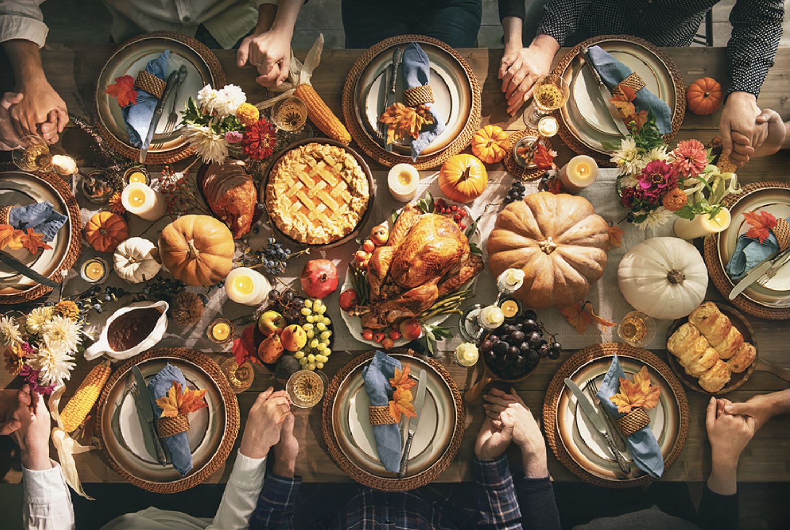

Holiday Season & Family Gatherings
November 2022

Here we are — the 2nd week of November, aka the "in between" phase of finishing up the leftover Halloween candy & going turkey shopping… & before you know it you hop on the wagon for the Holiday Gatherings Season of the year — the back to back marathon of 🙏🏻 Thanksgiving, 🎅🏻 Christmas, 🍾 New Year's, etc.
The one thing all these gatherings with family or friends have in common is — yes, you guessed it right — FOOD. In fact so much delicious food with endless options leaving you no choice but to dig in & indulge. But that's the very part that many of us dread the most about the Holidays!
Sound Familiar?
Before the holiday season begins, we live in an anxious mindset — something along the lines of:
- "I'm gonna sabotage all the progress I made in losing weight"
- "I will gain around 5-7 lbs & put on extra weight"
- "I don't want to over eat but I know I won't be able to control myself"
- And my personal favorite — the one who decides to starve themselves months in advance so that they can "survive" the holiday season without feeling guilty
After the holiday season, "the guilt trip" phase begins:
- "What did I do to myself?! I over ate, I'm so bloated"
- "I feel heavy & so unmotivated"
- "Who am I kidding — I definitely gained weight. What is the point of trying to get back on track? I ruined all my progress & there's no fixing that…the damage has already been done"
Quick question: WHY do we love & enjoy torturing ourselves?
Breaking the Cycle
If you're in hovering mode — always shifting between anxiety before, guilt after, & stress during — you are stuck in a vicious cycle. And it's time we address this once & for all!
The holidays are meant to be enjoyed. Food is meant to be enjoyed. The key is to shift your relationship with food from one of fear and guilt to one of balance and awareness. Here are some mindset shifts that can help:
- Permission to eat: Restricting before the holidays sets you up to overeat during them. Give yourself unconditional permission to enjoy food — it removes the "forbidden" power food has over you
- Slow down: Eat slowly, savor each bite, and check in with your hunger and fullness cues throughout the meal
- No guilt, no punishment: One or two indulgent meals will not derail your health journey. Your body is resilient — trust it
- Stay hydrated: Sometimes what feels like hunger is actually thirst, especially in the winter months
- Move your body: Not as punishment, but because it feels good and helps you stay connected to yourself
- Get back on track gracefully: After the holidays, simply return to your normal routine without crash diets or extreme restriction
The goal is not perfection — it's balance. You are allowed to enjoy the holidays fully AND maintain your health goals. They are not mutually exclusive.
If you find yourself consistently stuck in this cycle of restriction and guilt, that's exactly the kind of pattern we work on together in sessions. You deserve to enjoy every season — including the holiday one!